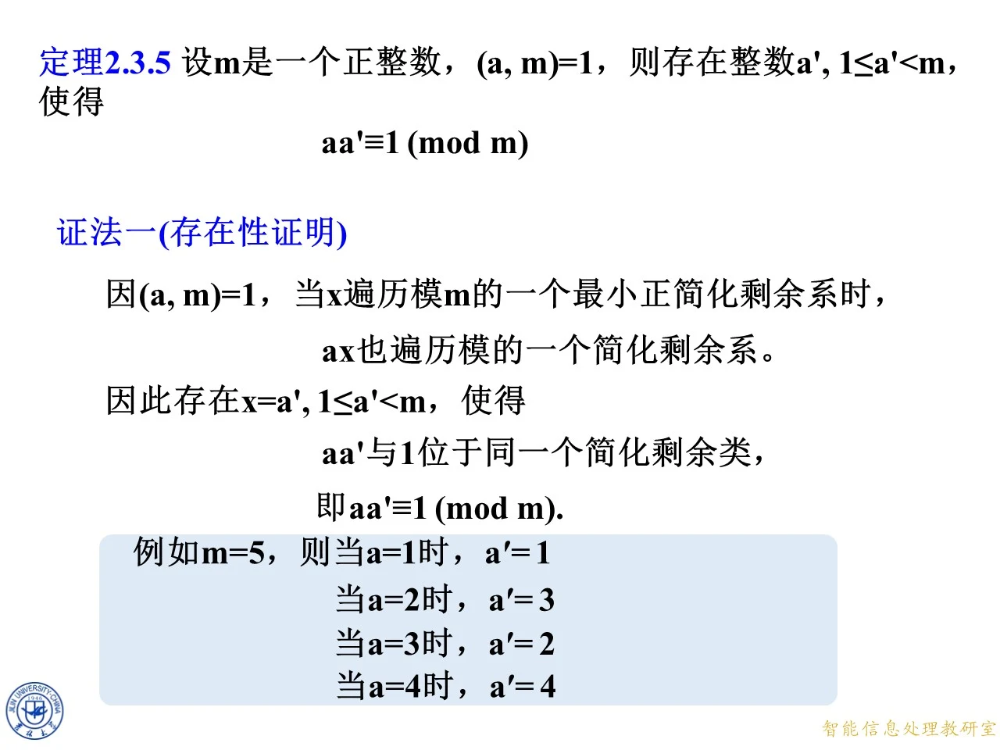

定理 2.3.4：乘一个互素的数不改变简化剩余系
◆ p.200-204 ｜定理 2.3.4 的证明
定理 2.3.4：设 m m m ( a , m ) = 1 (a,m)=1 ( a , m ) = 1 k k k m m m a k ak ak m m m
证明：当 k k k m m m k k k φ ( m ) \varphi(m) φ ( m ) k 1 , k 2 , … , k φ ( m ) k_1,k_2,\ldots,k_{\varphi(m)} k 1 , k 2 , … , k φ ( m ) a k ak ak φ ( m ) \varphi(m) φ ( m ) a k 1 , a k 2 , … , a k φ ( m ) ak_1,ak_2,\ldots,ak_{\varphi(m)} a k 1 , a k 2 , … , a k φ ( m )
数量：恰 φ ( m ) \varphi(m) φ ( m )
互素：因 ( a , m ) = 1 (a,m)=1 ( a , m ) = 1 ( k i , m ) = 1 (k_i,m)=1 ( k i , m ) = 1 ( a k i , m ) = 1 (ak_i,m)=1 ( a k i , m ) = 1
不同余：只需证明 a k i ≢ a k j ( m o d m ) ak_i\not\equiv ak_j\pmod m a k i ≡ a k j ( mod m ) i ≠ j i\ne j i = j a k i ≡ a k j ( m o d m ) ak_i\equiv ak_j\pmod m a k i ≡ a k j ( mod m ) i ≠ j i\ne j i = j m ∣ a ( k i − k j ) m\mid a(k_i-k_j) m ∣ a ( k i − k j ) ( a , m ) = 1 (a,m)=1 ( a , m ) = 1 m ∣ k i − k j m\mid k_i-k_j m ∣ k i − k j k i ≡ k j ( m o d m ) k_i\equiv k_j\pmod m k i ≡ k j ( mod m )
三查全过，故 a k ak ak m m m
拓展 （课件外补充）：这里反复用了"( a , m ) = 1 (a,m)=1 ( a , m ) = 1 m ∣ a ⋅ n m\mid a\cdot n m ∣ a ⋅ n m ∣ n m\mid n m ∣ n ( Z m Z ) ∗ \left(\frac{\mathbb Z}{m\mathbb Z}\right)^{*} ( m Z Z ) ∗ a a a φ ( m ) \varphi(m) φ ( m )
◆ p.205 ｜例 8：模 10 乘 7 的重排
例 8：设 m = 10 m=10 m = 10 a = 7 a=7 a = 7 k k k 1 , 3 , 7 , 9 1,3,7,9 1 , 3 , 7 , 9 7 k 7k 7 k
7 × 1 = 7 , 7 × 3 = 21 , 7 × 7 = 49 , 7 × 9 = 63 , 7\times1=7,\quad 7\times3=21,\quad 7\times7=49,\quad 7\times9=63, 7 × 1 = 7 , 7 × 3 = 21 , 7 × 7 = 49 , 7 × 9 = 63 ,
即 7 , 21 , 49 , 63 7,21,49,63 7 , 21 , 49 , 63
验证：取标准余数 7 , 21 , 49 , 63 7,21,49,63 7 , 21 , 49 , 63 7 , 1 , 9 , 3 7,1,9,3 7 , 1 , 9 , 3 1 , 3 , 7 , 9 1,3,7,9 1 , 3 , 7 , 9 7 k 7k 7 k ( 7 , 10 ) = 1 (7,10)=1 ( 7 , 10 ) = 1 ( k , 10 ) = 1 (k,10)=1 ( k , 10 ) = 1 [ 7 k m o d 10 ] = [ 7 , 1 , 9 , 3 ] [7k\bmod 10]=[7,1,9,3] [ 7 k mod 10 ] = [ 7 , 1 , 9 , 3 ]
◆ p.206-216 ｜例 9：模 9 的乘法重排表
例 9：设 m = 9 m=9 m = 9 ( a , m ) = 1 (a,m)=1 ( a , m ) = 1 x x x m m m 1 , 2 , 4 , 5 , 7 , 8 1,2,4,5,7,8 1 , 2 , 4 , 5 , 7 , 8 0 0 0 φ ( 9 ) = 6 \varphi(9)=6 φ ( 9 ) = 6 a x ax a x m m m a × x a\times x a × x x x x
a \ x a\backslash x a \ x 1
2
4
5
7
8
1
1
2
4
5
7
8
2
2
4
8
1
5
7
4
4
8
7
2
1
5
5
5
1
2
7
8
4
7
7
5
1
8
4
2
8
8
7
5
4
2
1
逐行检验（python 复算与课件完全一致）：以 a = 2 a=2 a = 2 2 × 1 = 2 2\times1=2 2 × 1 = 2 2 × 2 = 4 2\times2=4 2 × 2 = 4 2 × 4 = 8 2\times4=8 2 × 4 = 8 2 × 5 = 10 ≡ 1 ( m o d 9 ) 2\times5=10\equiv1\pmod9 2 × 5 = 10 ≡ 1 ( mod 9 ) 2 × 7 = 14 ≡ 5 ( m o d 9 ) 2\times7=14\equiv5\pmod9 2 × 7 = 14 ≡ 5 ( mod 9 ) 2 × 8 = 16 ≡ 7 ( m o d 9 ) 2\times8=16\equiv7\pmod9 2 × 8 = 16 ≡ 7 ( mod 9 ) 2 , 4 , 8 , 1 , 5 , 7 2,4,8,1,5,7 2 , 4 , 8 , 1 , 5 , 7 1 , 2 , 4 , 5 , 7 , 8 1,2,4,5,7,8 1 , 2 , 4 , 5 , 7 , 8 a = 4 , 5 , 7 , 8 a=4,5,7,8 a = 4 , 5 , 7 , 8 a = 1 a=1 a = 1 x = 1 x=1 x = 1 a = 2 a=2 a = 2 x = 5 x=5 x = 5 a = 4 a=4 a = 4 x = 7 x=7 x = 7 a = 5 a=5 a = 5 x = 2 x=2 x = 2 a = 7 a=7 a = 7 x = 4 x=4 x = 4 a = 8 a=8 a = 8 x = 8 x=8 x = 8 a x ≡ 1 ( m o d 9 ) ax\equiv1\pmod 9 a x ≡ 1 ( mod 9 ) x x x
◆ p.217-220 ｜例 9 分析一：ax 一定能遍历到任何简化剩余 b
课件在乘法表下方给出分析：如果 b b b m m m ( b , m ) = 1 (b,m)=1 ( b , m ) = 1 a x ax a x b b b a x ax a x a x ax a x b b b x x x
a x ≡ b ( m o d m ) 且 ( x , m ) = 1. ax\equiv b\pmod m \quad\text{且}\quad (x,m)=1. a x ≡ b ( mod m ) 且 ( x , m ) = 1.
存在性来自"遍历到"，唯一性来自"遍历不重"（不同 x x x
思考（课件提出）：如果 b b b m m m ( b , m ) > 1 (b,m)>1 ( b , m ) > 1 a x ≡ b ( m o d m ) ax\equiv b\pmod m a x ≡ b ( mod m )
拓展 （课件外补充）：答案是方程仍有唯一解类 x ≡ a − 1 b ( m o d m ) x\equiv a^{-1}b\pmod m x ≡ a − 1 b ( mod m ) ( x , m ) = ( a − 1 b , m ) = ( b , m ) > 1 (x,m)=(a^{-1}b,m)=(b,m)>1 ( x , m ) = ( a − 1 b , m ) = ( b , m ) > 1 2 x ≡ 3 ( m o d 9 ) 2x\equiv3\pmod9 2 x ≡ 3 ( mod 9 ) x ≡ 6 x\equiv6 x ≡ 6 2 × 6 = 12 ≡ 3 2\times6=12\equiv3 2 × 6 = 12 ≡ 3 ( 6 , 9 ) = 3 (6,9)=3 ( 6 , 9 ) = 3 b b b a x ≡ b ax\equiv b a x ≡ b ( a , m ) ∣ b (a,m)\mid b ( a , m ) ∣ b ( a , m ) = 1 (a,m)=1 ( a , m ) = 1
◆ p.221-226 ｜例 9 分析二：逆元定义
继续分析：1 1 1 m m m ( 1 , m ) = 1 (1,m)=1 ( 1 , m ) = 1 1 1 1 a x ax a x x x x
a x ≡ 1 ( m o d m ) 且 ( x , m ) = 1. ax\equiv1\pmod m \quad\text{且}\quad (x,m)=1. a x ≡ 1 ( mod m ) 且 ( x , m ) = 1.
课件于是给出定义：这个 x x x 0 ≤ x < m 0\le x<m 0 ≤ x < m a a a m m m a a a m m m 2 2 2 2 × 5 = 10 ≡ 1 2\times5=10\equiv1 2 × 5 = 10 ≡ 1 4 × 7 = 28 ≡ 1 4\times7=28\equiv1 4 × 7 = 28 ≡ 1 8 × 8 = 64 ≡ 1 ( m o d 9 ) 8\times8=64\equiv1\pmod 9 8 × 8 = 64 ≡ 1 ( mod 9 )
拓展 （课件外补充）：逆元存在的充要条件是 ( a , m ) = 1 (a,m)=1 ( a , m ) = 1 m m m a a a a a a a 2 ≡ 1 ( m o d m ) a^2\equiv1\pmod m a 2 ≡ 1 ( mod m ) a a a 1 , 8 1,8 1 , 8 1 , 9 1,9 1 , 9 p p p ± 1 \pm1 ± 1 p = 2 p=2 p = 2 a x ≡ b ax\equiv b a x ≡ b x ≡ a − 1 b ( m o d m ) x\equiv a^{-1}b\pmod m x ≡ a − 1 b ( mod m ) a a a
◆ p.227-228 ｜例 8 续：7 模 10 的乘法逆元
回到例 8：设 m = 10 m=10 m = 10 a = 7 a=7 a = 7 k k k 1 , 3 , 7 , 9 1,3,7,9 1 , 3 , 7 , 9 7 k 7k 7 k 7 , 21 , 49 , 63 7,21,49,63 7 , 21 , 49 , 63 a ⋅ x ≡ 1 ( m o d m ) a\cdot x\equiv1\pmod m a ⋅ x ≡ 1 ( mod m ) 7 × 3 = 21 ≡ 1 ( m o d 10 ) 7\times3=21\equiv1\pmod{10} 7 × 3 = 21 ≡ 1 ( mod 10 ) 7 × 3 m o d 10 = 1 7\times3\bmod 10=1 7 × 3 mod 10 = 1 7 , 1 , 9 , 3 7,1,9,3 7 , 1 , 9 , 3 k k k
定理 2.3.5：逆元的存在性与唯一性
◆ p.229-232 ｜证法一（存在性证明）
定理 2.3.5：设 m m m ( a , m ) = 1 (a,m)=1 ( a , m ) = 1 a ′ a' a ′ 1 ≤ a ′ < m 1\le a'<m 1 ≤ a ′ < m a a ′ ≡ 1 ( m o d m ) aa'\equiv1\pmod m a a ′ ≡ 1 ( mod m )
证法一（存在性证明）：因 ( a , m ) = 1 (a,m)=1 ( a , m ) = 1 x x x m m m a x ax a x m m m x = a ′ x=a' x = a ′ 1 ≤ a ′ < m 1\le a'<m 1 ≤ a ′ < m a a ′ aa' a a ′ 1 1 1
a a ′ ≡ 1 ( m o d m ) . aa'\equiv1\pmod m. a a ′ ≡ 1 ( mod m ) .
这里"最小正简化剩余系"保证 a ′ a' a ′ 1 1 1 m − 1 m-1 m − 1 m m m m m m
课件附例：m = 5 m=5 m = 5 a = 1 a=1 a = 1 a ′ = 1 a'=1 a ′ = 1 a = 2 a=2 a = 2 a ′ = 3 a'=3 a ′ = 3 a = 3 a=3 a = 3 a ′ = 2 a'=2 a ′ = 2 a = 4 a=4 a = 4 a ′ = 4 a'=4 a ′ = 4 1 × 1 ≡ 1 1\times1\equiv1 1 × 1 ≡ 1 2 × 3 = 6 ≡ 1 2\times3=6\equiv1 2 × 3 = 6 ≡ 1 3 × 2 = 6 ≡ 1 3\times2=6\equiv1 3 × 2 = 6 ≡ 1 4 × 4 = 16 ≡ 1 ( m o d 5 ) 4\times4=16\equiv1\pmod 5 4 × 4 = 16 ≡ 1 ( mod 5 )
◆ p.233-242 ｜例 10：用 Bézout 等式求 121 模 169 的逆元
例 10：设 m = 169 m=169 m = 169 a = 121 a=121 a = 121 a ′ a' a ′ 1 ≤ a ′ < m 1\le a'<m 1 ≤ a ′ < m a a ′ ≡ 1 ( m o d m ) aa'\equiv1\pmod m a a ′ ≡ 1 ( mod m )
解：由 1.3 节例 11 的 Bézout 等式
58 × 169 + ( − 81 ) × 121 = 1. 58\times169+(-81)\times121=1. 58 × 169 + ( − 81 ) × 121 = 1.
对等式两边取模 169：第一项 58 × 169 ≡ 0 ( m o d 169 ) 58\times169\equiv0\pmod{169} 58 × 169 ≡ 0 ( mod 169 )
58 × 169 + ( − 81 ) × 121 = 1 ≡ 1 ( m o d 169 ) , 58\times169+(-81)\times121=1\equiv1\pmod{169}, 58 × 169 + ( − 81 ) × 121 = 1 ≡ 1 ( mod 169 ) ,
即
( − 81 ) × 121 ≡ 1 ( m o d 169 ) . (-81)\times121\equiv1\pmod{169}. ( − 81 ) × 121 ≡ 1 ( mod 169 ) .
由于 − 81 ≡ 169 − 81 = 88 ( m o d 169 ) -81\equiv169-81=88\pmod{169} − 81 ≡ 169 − 81 = 88 ( mod 169 ) − 81 -81 − 81
( 169 − 81 ) × 121 ≡ 1 ( m o d 169 ) , 88 × 121 ≡ 1 ( m o d 169 ) . (169-81)\times121\equiv1\pmod{169},\qquad 88\times121\equiv1\pmod{169}. ( 169 − 81 ) × 121 ≡ 1 ( mod 169 ) , 88 × 121 ≡ 1 ( mod 169 ) .
故 a ′ = 88 a'=88 a ′ = 88 58 × 169 + ( − 81 ) × 121 = 1 58\times169+(-81)\times121=1 58 × 169 + ( − 81 ) × 121 = 1 88 × 121 m o d 169 = 1 88\times121\bmod169=1 88 × 121 mod 169 = 1
解题方法总结：求逆元就是求 Bézout 系数——把 ( a , m ) = 1 (a,m)=1 ( a , m ) = 1 s a + t m = 1 sa+tm=1 s a + t m = 1 s s s s s s m m m 1 ≤ a ′ < m 1\le a'<m 1 ≤ a ′ < m
◆ p.243 ｜证法二（构造性证明）
定理 2.3.5 的证法二（构造性证明）：因 ( a , m ) = 1 (a,m)=1 ( a , m ) = 1 s s s t t t
s a + t m = ( a , m ) = 1. sa+tm=(a,m)=1. s a + t m = ( a , m ) = 1.
因 t m ≡ 0 ( m o d m ) tm\equiv0\pmod m t m ≡ 0 ( mod m ) m m m s a ≡ 1 ( m o d m ) sa\equiv1\pmod m s a ≡ 1 ( mod m ) a ′ ≡ s ( m o d m ) a'\equiv s\pmod m a ′ ≡ s ( mod m ) a a ′ ≡ 1 ( m o d m ) aa'\equiv1\pmod m a a ′ ≡ 1 ( mod m )
两个证法的对比：证法一用"简化剩余系重排"保证存在，但没告诉你 a ′ a' a ′ s s s
◆ p.244-249 ｜唯一性证明：模 m 乘法逆元存在且唯一
课件追问：这样的 a ′ a' a ′ m m m ( a , m ) = 1 (a,m)=1 ( a , m ) = 1 a ′ a' a ′ 1 ≤ a ′ < m 1\le a'<m 1 ≤ a ′ < m a a ′ ≡ 1 ( m o d m ) aa'\equiv1\pmod m a a ′ ≡ 1 ( mod m )
唯一性证明（反证法）：设两个整数 a ′ a' a ′ a ′ ′ a'' a ′′ 1 ≤ a ′ < m 1\le a'<m 1 ≤ a ′ < m
a a ′ ≡ 1 ( m o d m ) , a a ′ ′ ≡ 1 ( m o d m ) . aa'\equiv1\pmod m,\qquad aa''\equiv1\pmod m. a a ′ ≡ 1 ( mod m ) , a a ′′ ≡ 1 ( mod m ) .
两式相减（同余式可相减：左减左、右减右）得
a ( a ′ − a ′ ′ ) ≡ 0 ( m o d m ) , a(a'-a'')\equiv0\pmod m, a ( a ′ − a ′′ ) ≡ 0 ( mod m ) ,
即 m ∣ a ( a ′ − a ′ ′ ) m\mid a(a'-a'') m ∣ a ( a ′ − a ′′ ) ( a , m ) = 1 (a,m)=1 ( a , m ) = 1 m ∣ ( a ′ − a ′ ′ ) m\mid(a'-a'') m ∣ ( a ′ − a ′′ ) a ′ ≡ a ′ ′ ( m o d m ) a'\equiv a''\pmod m a ′ ≡ a ′′ ( mod m ) a ′ a' a ′ a ′ ′ a'' a ′′ 1 ≤ a ′ < m 1\le a'<m 1 ≤ a ′ < m m − 1 m-1 m − 1 a ′ = a ′ ′ a'=a'' a ′ = a ′′
至此完整结论：模 m m m 1 ≤ a ′ < m 1\le a'<m 1 ≤ a ′ < m
拓展 （课件外补充）：严格说，若 m = 1 m=1 m = 1 1 ≤ a ′ < m 1\le a'<m 1 ≤ a ′ < m 1 ≤ a ′ < m 1\le a'<m 1 ≤ a ′ < m m > 1 m>1 m > 1 m = 1 m=1 m = 1 m ≥ 2 m\ge2 m ≥ 2 a ′ ( m o d m ) a'\pmod m a ′ ( mod m )
◆ p.250-255 ｜例 10（素数模逆元表）与例 11：解一次同余方程
例 10（第二处，素数模）：设 m = 7 m=7 m = 7 a a a m m m
1 ⋅ 1 ≡ 1 ( m o d 7 ) , 2 ⋅ 4 ≡ 1 ( m o d 7 ) , 3 ⋅ 5 ≡ 1 ( m o d 7 ) , 1\cdot1\equiv1\pmod7,\quad 2\cdot4\equiv1\pmod7,\quad 3\cdot5\equiv1\pmod7, 1 ⋅ 1 ≡ 1 ( mod 7 ) , 2 ⋅ 4 ≡ 1 ( mod 7 ) , 3 ⋅ 5 ≡ 1 ( mod 7 ) , 4 ⋅ 2 ≡ 1 ( m o d 7 ) , 5 ⋅ 3 ≡ 1 ( m o d 7 ) , 6 ⋅ 6 ≡ 1 ( m o d 7 ) . 4\cdot2\equiv1\pmod7,\quad 5\cdot3\equiv1\pmod7,\quad 6\cdot6\equiv1\pmod7. 4 ⋅ 2 ≡ 1 ( mod 7 ) , 5 ⋅ 3 ≡ 1 ( mod 7 ) , 6 ⋅ 6 ≡ 1 ( mod 7 ) .
python 复算：2 − 1 ≡ 4 2^{-1}\equiv4 2 − 1 ≡ 4 3 − 1 ≡ 5 3^{-1}\equiv5 3 − 1 ≡ 5 4 − 1 ≡ 2 4^{-1}\equiv2 4 − 1 ≡ 2 5 − 1 ≡ 3 5^{-1}\equiv3 5 − 1 ≡ 3 6 − 1 ≡ 6 ( m o d 7 ) 6^{-1}\equiv6\pmod 7 6 − 1 ≡ 6 ( mod 7 ) 6 ⋅ 6 ≡ 1 6\cdot6\equiv1 6 ⋅ 6 ≡ 1 − 1 -1 − 1 − 1 -1 − 1
例 11：求解 5 x + 6 ≡ 13 ( m o d 11 ) 5x+6\equiv13\pmod{11} 5 x + 6 ≡ 13 ( mod 11 )
思路：先把方程化成 a x ≡ b ax\equiv b a x ≡ b
移项：5 x ≡ 13 − 6 ( m o d 11 ) 5x\equiv13-6\pmod{11} 5 x ≡ 13 − 6 ( mod 11 ) 5 x ≡ 7 ( m o d 11 ) 5x\equiv7\pmod{11} 5 x ≡ 7 ( mod 11 )
方法一：因为 5 ⋅ 9 = 45 ≡ 1 ( m o d 11 ) 5\cdot9=45\equiv1\pmod{11} 5 ⋅ 9 = 45 ≡ 1 ( mod 11 ) p o w ( 5 , − 1 , 11 ) = 9 pow(5,-1,11)=9 p o w ( 5 , − 1 , 11 ) = 9 x ≡ 9 × 7 = 63 ≡ 8 ( m o d 11 ) x\equiv9\times7=63\equiv8\pmod{11} x ≡ 9 × 7 = 63 ≡ 8 ( mod 11 )
方法二（课件动画展示）：因为 5 ⋅ 2 = 10 ≡ − 1 ( m o d 11 ) 5\cdot2=10\equiv-1\pmod{11} 5 ⋅ 2 = 10 ≡ − 1 ( mod 11 ) 2 ⋅ 5 x ≡ 2 ⋅ 7 ( m o d 11 ) 2\cdot5x\equiv2\cdot7\pmod{11} 2 ⋅ 5 x ≡ 2 ⋅ 7 ( mod 11 ) 10 x ≡ 14 10x\equiv14 10 x ≡ 14 − x ≡ 3 ( m o d 11 ) -x\equiv3\pmod{11} − x ≡ 3 ( mod 11 ) x ≡ − 3 ≡ 8 ( m o d 11 ) x\equiv-3\equiv8\pmod{11} x ≡ − 3 ≡ 8 ( mod 11 )
两种方法答案一致：x ≡ 8 ( m o d 11 ) x\equiv8\pmod{11} x ≡ 8 ( mod 11 ) 5 × 8 + 6 = 46 = 4 × 11 + 2 ≡ 2 5\times8+6=46=4\times11+2\equiv2 5 × 8 + 6 = 46 = 4 × 11 + 2 ≡ 2 13 ≡ 2 ( m o d 11 ) 13\equiv2\pmod{11} 13 ≡ 2 ( mod 11 ) − 1 -1 − 1 a x ≡ ± 1 ax\equiv\pm1 a x ≡ ± 1
◆ p.256-263 ｜例 12：求 635 模 737 的逆元
例 12：设 m = 737 m=737 m = 737 a = 635 a=635 a = 635 a ′ a' a ′ 1 ≤ a ′ < m 1\le a'<m 1 ≤ a ′ < m a a ′ ≡ 1 ( m o d m ) aa'\equiv1\pmod m a a ′ ≡ 1 ( mod m )
解：由广义欧几里得除法（辗转相除再回代），可得整数
s = − 224 , t = 193 , s=-224,\qquad t=193, s = − 224 , t = 193 ,
使
( − 224 ) × 635 + 193 × 737 = 1. (-224)\times635+193\times737=1. ( − 224 ) × 635 + 193 × 737 = 1.
标注（课件红字）：− 224 -224 − 224 a ′ a' a ′ a a a m m m 193 × 737 ≡ 0 ( m o d 737 ) 193\times737\equiv0\pmod{737} 193 × 737 ≡ 0 ( mod 737 )
( − 224 ) × 635 + 193 × 737 ≡ 1 ( m o d 737 ) , (-224)\times635+193\times737\equiv1\pmod{737}, ( − 224 ) × 635 + 193 × 737 ≡ 1 ( mod 737 ) ,
( − 224 ) × 635 ≡ 1 ( m o d 737 ) . (-224)\times635\equiv1\pmod{737}. ( − 224 ) × 635 ≡ 1 ( mod 737 ) .
因 − 224 -224 − 224 1 ≤ a ′ < m 1\le a'<m 1 ≤ a ′ < m m m m
( 737 − 224 ) × 635 ≡ 1 ( m o d 737 ) , 513 × 635 ≡ 1 ( m o d 737 ) . (737-224)\times635\equiv1\pmod{737},\qquad 513\times635\equiv1\pmod{737}. ( 737 − 224 ) × 635 ≡ 1 ( mod 737 ) , 513 × 635 ≡ 1 ( mod 737 ) .
故 a ′ ≡ − 224 ( m o d 737 ) a'\equiv-224\pmod{737} a ′ ≡ − 224 ( mod 737 ) a ′ = 737 − 224 = 513 a'=737-224=513 a ′ = 737 − 224 = 513 a ′ = − 224 + 737 K a'=-224+737K a ′ = − 224 + 737 K K ∈ Z K\in\mathbb Z K ∈ Z K = 1 K=1 K = 1
python 复算：( − 224 ) × 635 + 193 × 737 = 1 (-224)\times635+193\times737=1 ( − 224 ) × 635 + 193 × 737 = 1 635 × 513 m o d 737 = 1 635\times513\bmod737=1 635 × 513 mod 737 = 1 − 224 m o d 737 = 513 -224\bmod737=513 − 224 mod 737 = 513 737 = 635 + 102 737=635+102 737 = 635 + 102 635 = 6 × 102 + 23 635=6\times102+23 635 = 6 × 102 + 23 102 = 4 × 23 + 10 102=4\times23+10 102 = 4 × 23 + 10 23 = 2 × 10 + 3 23=2\times10+3 23 = 2 × 10 + 3 10 = 3 × 3 + 1 10=3\times3+1 10 = 3 × 3 + 1 s = − 224 , t = 193 s=-224,t=193 s = − 224 , t = 193
◆ p.264 ｜填空题：两模互素时的遍历（定理 2.3.4 的直接应用）
填空题（2 分）：若 ( m 1 , m 2 ) = 1 (m_1,m_2)=1 ( m 1 , m 2 ) = 1 m 1 > 0 m_1>0 m 1 > 0 m 2 > 0 m_2>0 m 2 > 0 k 1 k_1 k 1 k 2 k_2 k 2 m 1 m_1 m 1 m 2 m_2 m 2
（1）m 2 k 1 m_2k_1 m 2 k 1 m 1 k 2 m_1k_2 m 1 k 2
解答：使用定理 2.3.4。对（1），把 m 2 m_2 m 2 a a a m 1 m_1 m 1 m m m ( a , m ) = 1 (a,m)=1 ( a , m ) = 1 ( m 2 , m 1 ) = ( m 1 , m 2 ) = 1 (m_2,m_1)=(m_1,m_2)=1 ( m 2 , m 1 ) = ( m 1 , m 2 ) = 1 k 1 k_1 k 1 m 1 m_1 m 1 m 2 k 1 m_2k_1 m 2 k 1 m 1 m_1 m 1 m 1 m_1 m 1 ( m 1 , m 2 ) = 1 (m_1,m_2)=1 ( m 1 , m 2 ) = 1 k 2 k_2 k 2 m 2 m_2 m 2 m 1 k 2 m_1k_2 m 1 k 2 m 2 m_2 m 2 m 2 m_2 m 2

课件原图 · 9月18日授课 · 第 232 页 查看前后已收录原页 → 两个模的简化剩余系
◆ p.265-268 ｜定理（两个模的简化剩余系）的陈述
2.3.3 两个模的简化剩余系：若 ( m 1 , m 2 ) = 1 (m_1,m_2)=1 ( m 1 , m 2 ) = 1 m 1 > 0 m_1>0 m 1 > 0 m 2 > 0 m_2>0 m 2 > 0 k 1 k_1 k 1 k 2 k_2 k 2 m 1 m_1 m 1 m 2 m_2 m 2
（1）m 2 k 1 m_2k_1 m 2 k 1 m 1 m_1 m 1 m 1 k 2 m_1k_2 m 1 k 2 m 2 m_2 m 2 m 2 k 1 + m 1 k 2 m_2k_1+m_1k_2 m 2 k 1 + m 1 k 2 m 1 m 2 m_1m_2 m 1 m 2
前两条就是上一页填空题的内容（定理 2.3.4 的直接应用）。第（3）条是本定理的主菜，证明分三步走，课件在后续页逐步展开：
① 不同余：m 2 k 1 + m 1 k 2 ≢ m 2 k 1 ′ + m 1 k 2 ′ ( m o d m 1 m 2 ) m_2k_1+m_1k_2\not\equiv m_2k_1'+m_1k_2'\pmod{m_1m_2} m 2 k 1 + m 1 k 2 ≡ m 2 k 1 ′ + m 1 k 2 ′ ( mod m 1 m 2 ) ( k 1 , k 2 ) ≠ ( k 1 ′ , k 2 ′ ) (k_1,k_2)\ne(k_1',k_2') ( k 1 , k 2 ) = ( k 1 ′ , k 2 ′ ) m 1 m 2 m_1m_2 m 1 m 2 m 1 m_1 m 1 m 1 ∣ m 2 ( k 1 − k 1 ′ ) m_1\mid m_2(k_1-k_1') m 1 ∣ m 2 ( k 1 − k 1 ′ ) ( m 2 , m 1 ) = 1 (m_2,m_1)=1 ( m 2 , m 1 ) = 1 k 1 ≡ k 1 ′ ( m o d m 1 ) k_1\equiv k_1'\pmod{m_1} k 1 ≡ k 1 ′ ( mod m 1 ) k 2 ≡ k 2 ′ ( m o d m 2 ) k_2\equiv k_2'\pmod{m_2} k 2 ≡ k 2 ′ ( mod m 2 )
② 互素：在已知条件下 ( m 2 k 1 + m 1 k 2 , m 1 m 2 ) = 1 (m_2k_1+m_1k_2,m_1m_2)=1 ( m 2 k 1 + m 1 k 2 , m 1 m 2 ) = 1
③ 个数：m 2 k 1 + m 1 k 2 m_2k_1+m_1k_2 m 2 k 1 + m 1 k 2 φ ( m 1 ) φ ( m 2 ) \varphi(m_1)\varphi(m_2) φ ( m 1 ) φ ( m 2 ) φ ( m 1 m 2 ) = φ ( m 1 ) φ ( m 2 ) \varphi(m_1m_2)=\varphi(m_1)\varphi(m_2) φ ( m 1 m 2 ) = φ ( m 1 ) φ ( m 2 ) ( m 1 , m 2 ) = 1 (m_1,m_2)=1 ( m 1 , m 2 ) = 1 φ ( m 1 m 2 ) \varphi(m_1m_2) φ ( m 1 m 2 )
三条合起来正好套用定理 2.3.3 的判别法：个数对、全互素、两两不同余，所以遍历模 m 1 m 2 m_1m_2 m 1 m 2
◆ p.269-272 ｜②的证明前半：模 m2 方向
证明②（( m 2 k 1 + m 1 k 2 , m 1 m 2 ) = 1 (m_2k_1+m_1k_2,m_1m_2)=1 ( m 2 k 1 + m 1 k 2 , m 1 m 2 ) = 1 m 1 m_1 m 1 m 2 m_2 m 2 m 1 m_1 m 1 m 2 m_2 m 2 ( c , m 1 ) = 1 (c,m_1)=1 ( c , m 1 ) = 1 ( c , m 2 ) = 1 (c,m_2)=1 ( c , m 2 ) = 1 ( c , m 1 m 2 ) = 1 (c,m_1m_2)=1 ( c , m 1 m 2 ) = 1
模 m 2 m_2 m 2
已知 ( k 2 , m 2 ) = 1 (k_2,m_2)=1 ( k 2 , m 2 ) = 1 k 2 k_2 k 2 m 2 m_2 m 2 ( m 1 , m 2 ) = 1 (m_1,m_2)=1 ( m 1 , m 2 ) = 1
由例 16（两个互素相乘仍互素）得 ( m 1 k 2 , m 2 ) = 1 (m_1k_2,m_2)=1 ( m 1 k 2 , m 2 ) = 1 m 1 m_1 m 1 m 2 m_2 m 2 k 2 k_2 k 2 m 2 m_2 m 2 m 1 k 2 m_1k_2 m 1 k 2 m 2 m_2 m 2
而 m 2 k 1 m_2k_1 m 2 k 1 m 2 m_2 m 2 m 2 m_2 m 2 ( m 2 k 1 + m 1 k 2 , m 2 ) = ( m 1 k 2 , m 2 ) = 1 (m_2k_1+m_1k_2,m_2)=(m_1k_2,m_2)=1 ( m 2 k 1 + m 1 k 2 , m 2 ) = ( m 1 k 2 , m 2 ) = 1
◆ p.273-280 ｜②的证明后半：模 m1 方向与合并
模 m 1 m_1 m 1 m 2 k 1 + m 1 k 2 m_2k_1+m_1k_2 m 2 k 1 + m 1 k 2 k 1 m 2 + m 1 k 2 k_1m_2+m_1k_2 k 1 m 2 + m 1 k 2 a = k 1 m 2 a=k_1m_2 a = k 1 m 2 b = m 1 k 2 b=m_1k_2 b = m 1 k 2 c = m 1 c=m_1 c = m 1
已知 ( k 1 , m 1 ) = 1 (k_1,m_1)=1 ( k 1 , m 1 ) = 1 ( m 1 , m 2 ) = 1 (m_1,m_2)=1 ( m 1 , m 2 ) = 1 ( m 2 k 1 , m 1 ) = 1 (m_2k_1,m_1)=1 ( m 2 k 1 , m 1 ) = 1
m 1 k 2 m_1k_2 m 1 k 2 m 1 m_1 m 1 ( m 2 k 1 + m 1 k 2 , m 1 ) = ( m 2 k 1 , m 1 ) = 1 (m_2k_1+m_1k_2,m_1)=(m_2k_1,m_1)=1 ( m 2 k 1 + m 1 k 2 , m 1 ) = ( m 2 k 1 , m 1 ) = 1
合并：( m 2 k 1 + m 1 k 2 , m 1 ) = 1 (m_2k_1+m_1k_2,m_1)=1 ( m 2 k 1 + m 1 k 2 , m 1 ) = 1 ( m 2 k 1 + m 1 k 2 , m 2 ) = 1 (m_2k_1+m_1k_2,m_2)=1 ( m 2 k 1 + m 1 k 2 , m 2 ) = 1 m 1 , m 2 m_1,m_2 m 1 , m 2
( m 2 k 1 + m 1 k 2 , m 1 m 2 ) = 1. (m_2k_1+m_1k_2,m_1m_2)=1. ( m 2 k 1 + m 1 k 2 , m 1 m 2 ) = 1.
课件用箭头图把两条链汇合到最终结论，②证毕。
拓展 （课件外补充）：整个证明的结构是"先拆模、后合并"，这是处理复合模 m 1 m 2 m_1m_2 m 1 m 2 n = 2 n=2 n = 2
◆ p.281-283 ｜③：个数恰为 φ(m1)φ(m2)
③ m 2 k 1 + m 1 k 2 m_2k_1+m_1k_2 m 2 k 1 + m 1 k 2 φ ( m 1 ) φ ( m 2 ) \varphi(m_1)\varphi(m_2) φ ( m 1 ) φ ( m 2 ) k 1 k_1 k 1 φ ( m 1 ) \varphi(m_1) φ ( m 1 ) k 2 k_2 k 2 φ ( m 2 ) \varphi(m_2) φ ( m 2 ) φ ( m 1 ) φ ( m 2 ) \varphi(m_1)\varphi(m_2) φ ( m 1 ) φ ( m 2 ) m 1 m 2 m_1m_2 m 1 m 2 φ ( m 1 ) φ ( m 2 ) \varphi(m_1)\varphi(m_2) φ ( m 1 ) φ ( m 2 ) φ ( m 1 m 2 ) \varphi(m_1m_2) φ ( m 1 m 2 ) φ ( m 1 m 2 ) = φ ( m 1 ) φ ( m 2 ) \varphi(m_1m_2)=\varphi(m_1)\varphi(m_2) φ ( m 1 m 2 ) = φ ( m 1 ) φ ( m 2 ) ( m 1 , m 2 ) = 1 (m_1,m_2)=1 ( m 1 , m 2 ) = 1
◆ p.284-289 ｜③ 的另一种证法：任一简化剩余都被遍历到
课件给出③/结论的补充论证（对应例 9 分析的"遍历到"逻辑）：模 m 1 m 2 m_1m_2 m 1 m 2 a a a m 2 k 1 + m 1 k 2 m_2k_1+m_1k_2 m 2 k 1 + m 1 k 2
理由（课件动画）：由两个模的完全剩余系遍历定理可知，必存在 k 1 k_1 k 1 k 2 k_2 k 2
a ≡ m 2 k 1 + m 1 k 2 ( m o d m 1 m 2 ) . a\equiv m_2k_1+m_1k_2\pmod{m_1m_2}. a ≡ m 2 k 1 + m 1 k 2 ( mod m 1 m 2 ) .
课件在关键处提问：这里 ( k 1 , m 1 ) = 1 (k_1,m_1)=1 ( k 1 , m 1 ) = 1 ( k 2 , m 2 ) = 1 (k_2,m_2)=1 ( k 2 , m 2 ) = 1
由上式分别取模 m 1 m_1 m 1 m 2 m_2 m 2 a ≡ m 2 k 1 ( m o d m 1 ) a\equiv m_2k_1\pmod{m_1} a ≡ m 2 k 1 ( mod m 1 ) a ≡ m 1 k 2 ( m o d m 2 ) a\equiv m_1k_2\pmod{m_2} a ≡ m 1 k 2 ( mod m 2 )
已知 ( a , m 1 m 2 ) = 1 (a,m_1m_2)=1 ( a , m 1 m 2 ) = 1 a a a ( a , m 1 ) = 1 (a,m_1)=1 ( a , m 1 ) = 1 ( a , m 2 ) = 1 (a,m_2)=1 ( a , m 2 ) = 1
于是 ( m 2 k 1 , m 1 ) = 1 (m_2k_1,m_1)=1 ( m 2 k 1 , m 1 ) = 1 ( m 2 , m 1 ) = 1 (m_2,m_1)=1 ( m 2 , m 1 ) = 1 ( k 1 , m 1 ) = 1 (k_1,m_1)=1 ( k 1 , m 1 ) = 1 k 1 k_1 k 1 m 1 m_1 m 1 d > 1 d>1 d > 1 d d d m 2 k 1 m_2k_1 m 2 k 1 m 1 m_1 m 1
对称地 ( m 1 k 2 , m 2 ) = 1 (m_1k_2,m_2)=1 ( m 1 k 2 , m 2 ) = 1 ( m 1 , m 2 ) = 1 (m_1,m_2)=1 ( m 1 , m 2 ) = 1 ( k 2 , m 2 ) = 1 (k_2,m_2)=1 ( k 2 , m 2 ) = 1
所以不仅"存在 k 1 , k 2 k_1,k_2 k 1 , k 2 k 1 , k 2 k_1,k_2 k 1 , k 2 a a a
◆ p.290 ｜定理收束
最终把三步的结论标注回定理陈述：（1）（2）由定理 2.3.4 直接得到；（3）的证明=①（两两不同余，其中 ( k 1 , m 1 ) = 1 (k_1,m_1)=1 ( k 1 , m 1 ) = 1 ( k 2 , m 2 ) = 1 (k_2,m_2)=1 ( k 2 , m 2 ) = 1 ( m 2 k 1 + m 1 k 2 , m 1 m 2 ) = 1 (m_2k_1+m_1k_2,m_1m_2)=1 ( m 2 k 1 + m 1 k 2 , m 1 m 2 ) = 1 m 1 m 2 m_1m_2 m 1 m 2 a a a m 2 k 1 + m 1 k 2 m_2k_1+m_1k_2 m 2 k 1 + m 1 k 2 m 2 k 1 + m 1 k 2 m_2k_1+m_1k_2 m 2 k 1 + m 1 k 2 m 1 m 2 m_1m_2 m 1 m 2
拓展 （课件外补充）：用具体数字检验一遍定理：取 m 1 = 4 , m 2 = 5 m_1=4,m_2=5 m 1 = 4 , m 2 = 5 { 1 , 3 } \{1,3\} { 1 , 3 } { 1 , 2 , 3 , 4 } \{1,2,3,4\} { 1 , 2 , 3 , 4 } 5 k 1 + 4 k 2 5k_1+4k_2 5 k 1 + 4 k 2 1 , 3 , 7 , 9 , 11 , 13 , 17 , 19 1,3,7,9,11,13,17,19 1 , 3 , 7 , 9 , 11 , 13 , 17 , 19 φ ( 20 ) = φ ( 4 ) φ ( 5 ) = 2 × 4 = 8 \varphi(20)=\varphi(4)\varphi(5)=2\times4=8 φ ( 20 ) = φ ( 4 ) φ ( 5 ) = 2 × 4 = 8 m 1 = 8 , m 2 = 9 m_1=8,m_2=9 m 1 = 8 , m 2 = 9 9 k 1 + 8 k 2 9k_1+8k_2 9 k 1 + 8 k 2 k 1 ∈ { 1 , 3 , 5 , 7 } k_1\in\{1,3,5,7\} k 1 ∈ { 1 , 3 , 5 , 7 } k 2 ∈ { 1 , 2 , 4 , 5 , 7 , 8 } k_2\in\{1,2,4,5,7,8\} k 2 ∈ { 1 , 2 , 4 , 5 , 7 , 8 } φ ( 72 ) = φ ( 8 ) φ ( 9 ) = 24 \varphi(72)=\varphi(8)\varphi(9)=24 φ ( 72 ) = φ ( 8 ) φ ( 9 ) = 24 φ ( p q ) = φ ( p ) φ ( q ) \varphi(pq)=\varphi(p)\varphi(q) φ ( pq ) = φ ( p ) φ ( q ) p , q p,q p , q